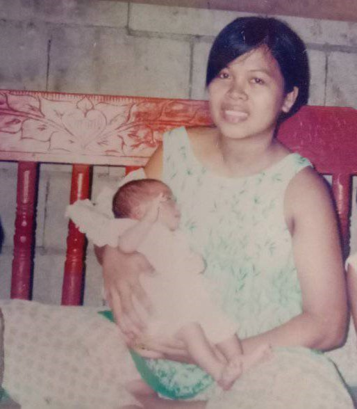
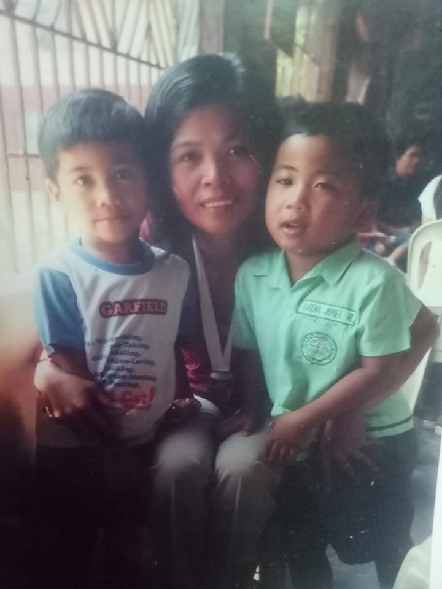
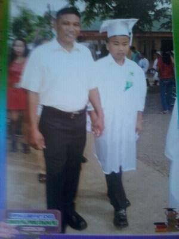

Childhood
I will just be going to merge my Childhood since I don’t have a lot of pictures when I was young.

I was born on July 26, 2002 this photo was taken while I’m two weeks old. During these days were frequently moving from town to town since my parents haven’t invested yet for a house this photo was taken on Paniqui, Tarlac which was my birthplace.

This photo was taken when I’m in Kindergarten by this time where living in Cabuyao, Laguna. Yeah, we don’t have a permanent address as I said. As far as I remember there was an event during this time in my school so we took a picture alongside with my cousin. I finished my pre-school at Institute for Foundational Learning before coming here in Capiz way back 2009. By that time, I was an incoming first grade.
Elementary
During my elementary days I studied at Hipona, Elementary, School from 2009 to 2015.This picture was taken when I was in the second grade, I was a consistent honor student during my Elementary days. During these days I really love going to school since unlike in Laguna where I just go to school have a break then go back home. I was a different story my peer student able to play on fields a lot which was new to me back then I was happy that I could do so. Back in Laguna in the subdivision we are staying in going outside was restricted for kids. This new environment was strange to me but I kind of like it.
This are the random events I joined during my elementary days. The first photo was during my third grade it was when I joined cubs scout, I was with my younger brother. The second photo was when I was chosen to be part of the performing group during YES-O camp if I’m not mistaken, I was on sixth grade during this time and we bagged the second place in this competition. The third photo was when I join boy scout, I’m also in sixth grade this time. We are performing an intermission number this time. Though the last two photos captures me dancing I’m really bad at it it’s just our school don’t have a lot of option and just grab random ones.
.jpg)
.jpg)
.jpg)
I'm having a hard time finding some photo to include since I don't have a lot of pictures that time. This are some random pictures of mine during this time. As far as I remeber post-yolanda era around 2013 I was addicted on facebook here are some of my profile pictures that I save that time.
This was the time when I graduated elementary, I finished it with 3rd honorable mention. In this photo I was with my father which was the first time to me ever since I’m achieving awards on recognition he always refuses to go. But this time he told me that he will be going with me with the march. Some photos in this section were low quality since I didn’t have the original photos. I just retrieved some of it on facebook and the camera quality back then was not that good. This wrapped up my elementary story theirs a lot of story I could tell but it would be too long if I include everything.